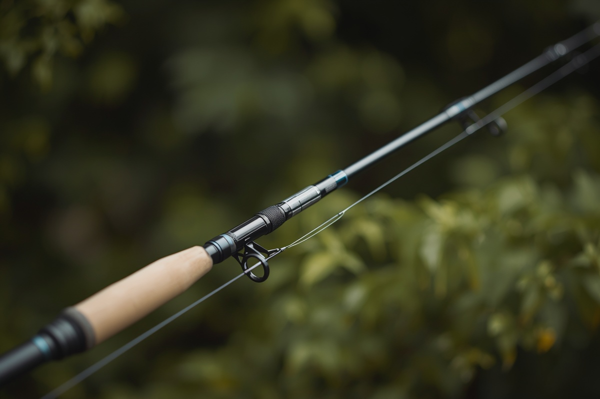
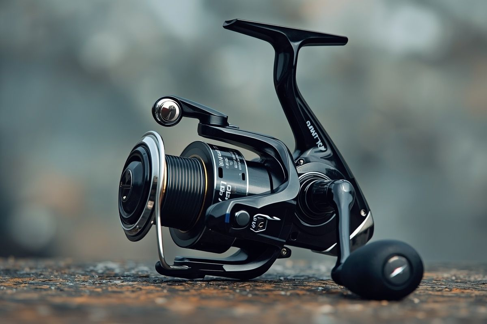
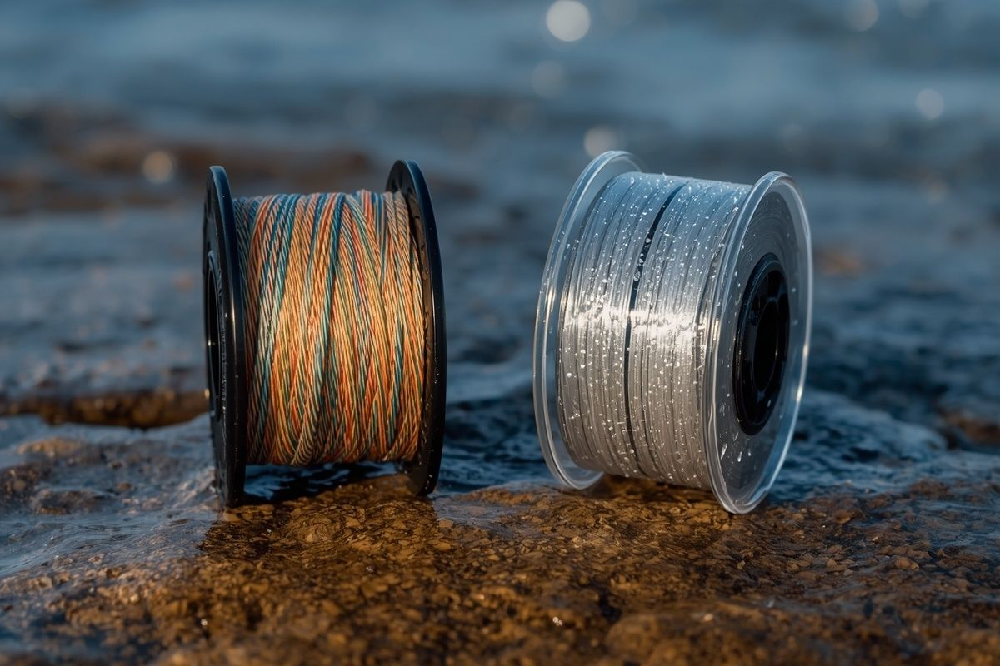
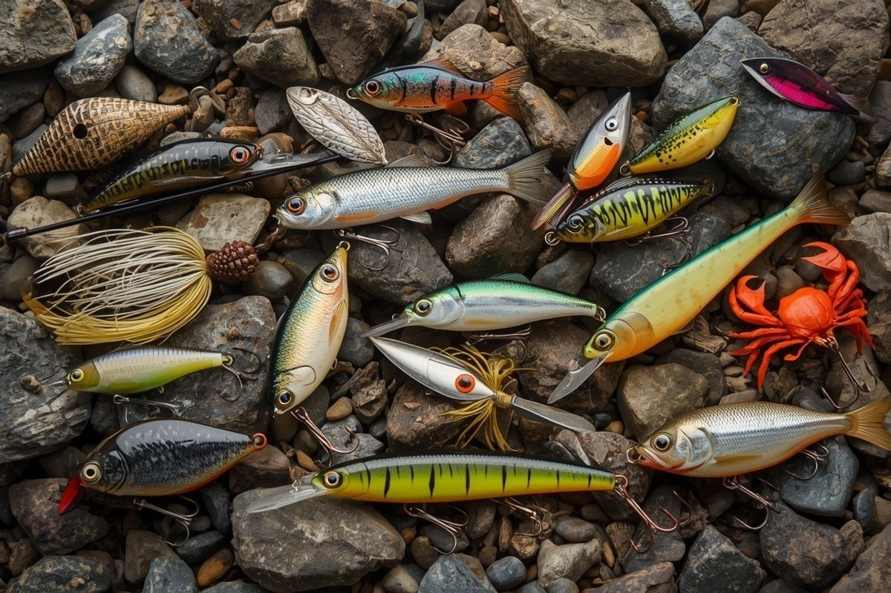
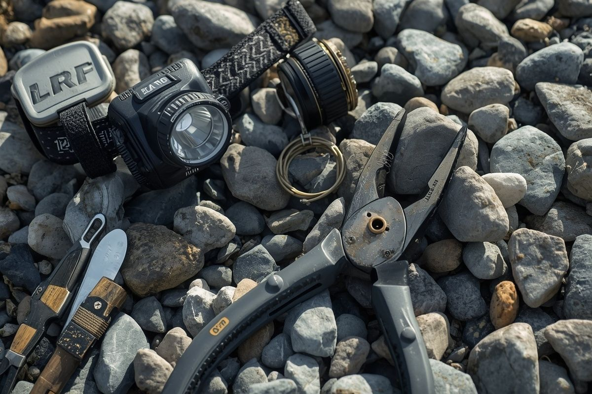

Hassasiyet and hafifliğin buluşması. Doğru kamış, makine and mikro yem seçimini yap kanka.
LRF seti beş temel bileşenden oluşur: olta, makara, misina, maket ve aksesuarlar. Her birinin görevi farklıdır ve doğru kombinasyon, hem keyifli hem de verimli bir balıkçılık deneyimi sağlar. Aşağıda her malzemeyi detaylıca inceliyoruz.

LRF oltaları, hafif maketleri uzağa atmak ve küçük balıkların titreşimlerini hissetmek için özel olarak tasarlanmıştır. Genellikle 1,8–2,4 metre uzunluğunda, karbon fiber veya cam elyaf kompozit malzemeden üretilirler.

Spinning makara, LRF setinin kalbidir. Misina kapasitesi, fren sistemi ve ağırlığı doğrudan balıkçılık deneyimini etkiler. 1000–2500 numara arası makaralar LRF için en uygun seçeneklerdir.

Misina seçimi, maket hissini and atış mesafesini doğrudan etkiler. LRF'de iki ana seçenek vardır: PE örgü misina (braid) and monofilament. Her birinin avantajları and dezavantajları vardır.

Maketler, LRF'nin en eğlenceli parçasıdır. Soft plastik maketler, metal jig'ler, micro crankbait'ler and spinner'lar different koşullarda farklı sonuçlar verir. Renk and boyut seçimi kritik önem taşır.

Küçük dokunuşlar, büyük trofeleri kıyıya hasarsız almanızı sağlar. LRF aksesuarları, av esnasında hızınızı, güvenliğinizi and konforunuzu en üst düzeye çıkarmak için tasarlanmıştır kanka.
İlk setini kurarken fazla harcama yapma. 2000 numara orta segment bir makara, 2-10 gr atış ağırlıklı bir olta, #0.4 PE misina + florkarbon lider ve 10-15 adet çeşitli maket ile başlayabilirsin. Toplam bütçe: 2.000–4.000 TL aralığında kaliteli bir başlangıç seti kurulabilir.
Başlangıç rehberimizle ilk atışına hazırlan. Teknik İpuçlarımız ile başarı şansını artır.